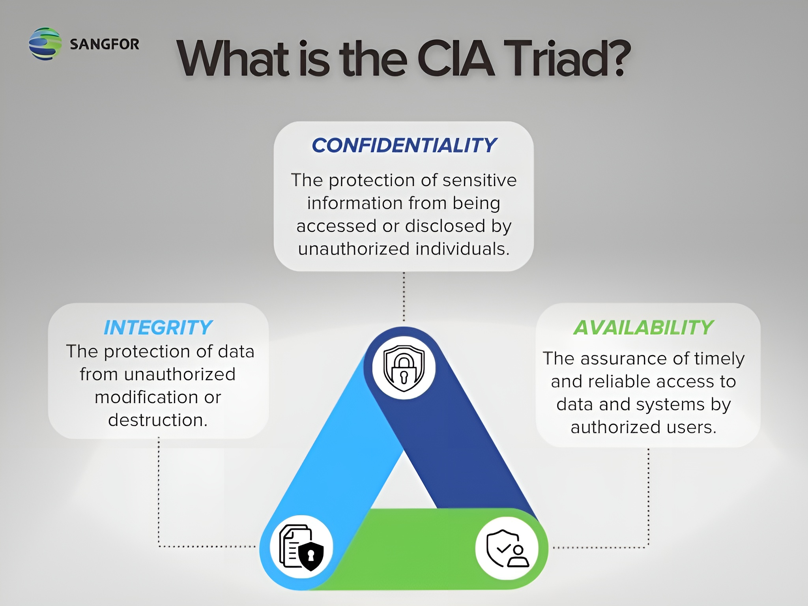

Lesson 1: Introduction to Platform Security

What is Platform Security?
It refers to the set of strategies, tools, and policies used to protect the hardware, operating system, and software environments from cyber threats and unauthorized access.Scope of Platform Security:
- covers physical devices, virtualization laters, OS, applications, and APIs
- applies to mobile, cloud, desktop, IoT, and enterprise systems
Importance of Platform Security
Platforms are the foundation for applications and services. A breach at the platform level can compromise everything built on it.Benefits:
- Protects sensitive data from theft or loss
- Prevents downtime that affects productivity
- Ensures compliance with security regulations (e.g., GDPR, HIPAA)
- Maintains user trust in the system or service
Common Threats to Platforms
- Malware - Viruses, ransomware, spyware targeting system files
- Privilege Escalation - Attackers gaining admin-level access
- Zero-Day Exploits - Attacks exploiting unpatched vulnerabilities
- Rootkits - Malicious code hidden deep in the OS
- Firmware Attacks - Compromising the BIOS/UEFI or device drivers
- Insider Threats - Employees misusing access rights
Layers of Platform Security
- Physical Security - Protecting hardware from theft or tampering
- Firmware & Boot Security - Secure boot, BIOS/UEFI passwords
- Operating System Security - Patch management, user privilege control
- Application Security - Sandboxing, code signing, app permissions
- Network Security - Firewalls, VPNs, intrusion detection/prevention
- Data Security - Encryption at rest and in transit
The CIA Triad
Confidentiality
Security professional's obligation is to regulate access—protect the data that needs protection, yet permit access to authorized individuals.- Personally Identifiable Information (PII) - It pertains to any data about an individual that could be used to identify them.
- Protected Health Information (PHI) - which is information regarding one's health status.
- Classified or Sensitive Information - which includes trade secrets, research, business plans and intellectual property.
Integrity
Measures the degree to which something is whole and complete, internally consistent and correct. The concept of integrity applies to:- information or data
- systems and processes for business operations
- organizations
- people and their actions
- Data Integrity - the property that data has not been altered in an unauthorized manner. Data integrity covers data in storage, during processing and while in transit.
- System Integrity - The quality that the system has when it performs its intended function in an unimpaired manner, free from unauthorized manipulation of the system, whether intentional or accidental.
Availability
Can be defined as (1) timely and reliable access to information and the ability to use it, and (2) for authorized users, timely and reliable access to data and information services.Authentication
The process of verifying or proving the user’s identification.There are three common methods of authentication: